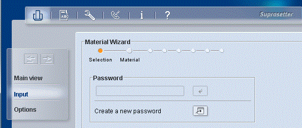
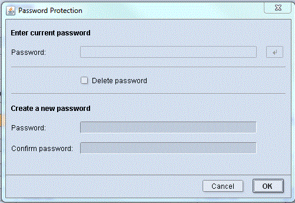
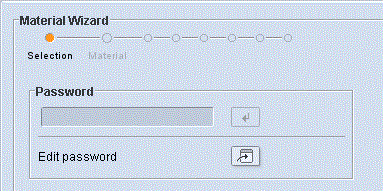
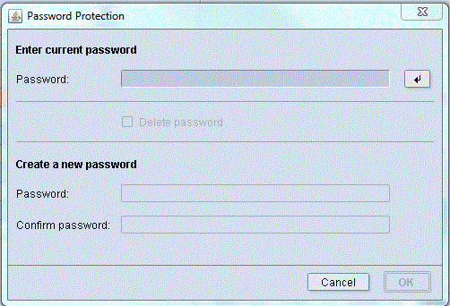
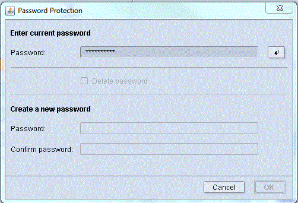
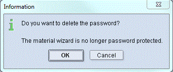
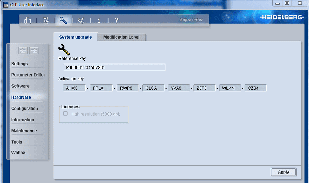

Вы можете защитить Мастера Материала, назначив пароль.
Мастер материалов может быть защищен паролем. Идентификация позволяет получить доступ к каждому из материалов.
Нажмите «Редактировать» в списке материалов окна Material Wizard (1).
Над выбором материала вы теперь видите окно для рутины пароля.
1. Нажмите кнопку «Создать новый пароль».


Верхний диалоговый раздел («Введите текущий пароль») отключен, поскольку пароля еще нет.

3. Подтвердите пароль, который вы набрали, набрав его снова в поле «Подтвердить пароль».
Неправильный ввод приведет к появлению соответствующего диалогового окна.

5. Перепечатайте пароль и подтвердите «ОК» снова.
Когда вход был успешным, рядом с иконой клавиши Enter появляется значок замка.

Иконка замка указывает на то, что Material Wizard заблокирован, то есть защищен паролем.
Окно выглядит следующим образом при наличии пароля:

Иконка замка рядом с иконой клавиши Enter указывает на то, что Material Wizard заблокирован, т.е. пароль присутствует.
После того, как вы набрали пароль и нажали на стрелку (введите ключ), вы можете работать с Мастером материалов; окно выглядит следующим образом:

Вы можете изменить или отредактировать свой пароль. Следующий диалог открывается, когда вы нажимаете «Редактировать пароль»:

Нижний раздел еще не редактируется.
Введите свой текущий пароль и нажмите стрелку (введите ключ). Следующие окна отображают:

«Удалить пароль» и нижнюю часть окна активированы и могут быть запущены уже сейчас. Вы не хотите удалять сейчас, но создайте новый пароль.
2. Подтвердить, перепечатав в «Подтвердить пароль».
1. Введите свой пароль и нажмите значок клавиши Enter.

«Удалить пароль» и нижний раздел «Создать новый пароль» активизируются после ввода пароля.

2. Проверьте «Удалить пароль».
Запрос безопасности показывает, действительно ли вы

Примечание: С удалением пароля Material Wizard больше не защищен паролем.

Вы должны сбросить защиту пароля, когда забыли пароль.
Продолжайте следующим образом:


4. Нажмите «Применить», когда вы сделали свой вход.
После непродолжительной задержки появится следующее сообщение:

Это сообщение указывает на то, что защита паролем Material Wizard была сброшена. Он больше не защищен паролем. Теперь вы можете снова начать процедуру защиты паролем.
В этой таблице перечислены имеющиеся материалы.
Тип материала показан в этой колонке.
Материальное имя, которое было введено в "Материальный Волшебник (3)", показано в этой колонке.
Скорость барабана изображения показана в этой колонке.
Размер пластины, которая была введена в "Материальный Волшебник (3)", показан в этой колонке.
Нажмите «Новый», если вы хотите добавить еще одну строку в таблицу для нового материала.
Нажмите «Копировать», чтобы скопировать материал, который вы выбрали заранее в таблице, и добавьте его в таблицу.
Нажмите «Удалить», чтобы удалить материал, который вы выбрали заранее из таблицы после подтверждения.
Нажмите «Близко», чтобы вернуться к «Материальный волшебник (1)».
Нажмите «Назад», чтобы вернуться к «Материальный волшебник (1)».
Эта кнопка включается только в том случае, если материал был выбран в таблице или если в таблицу был добавлен новый материал, нажав «Новый».
Нажмите «Далее», чтобы открыть «Материальный волшебник» (3). В этом диалоге вы можете ввести новые данные.